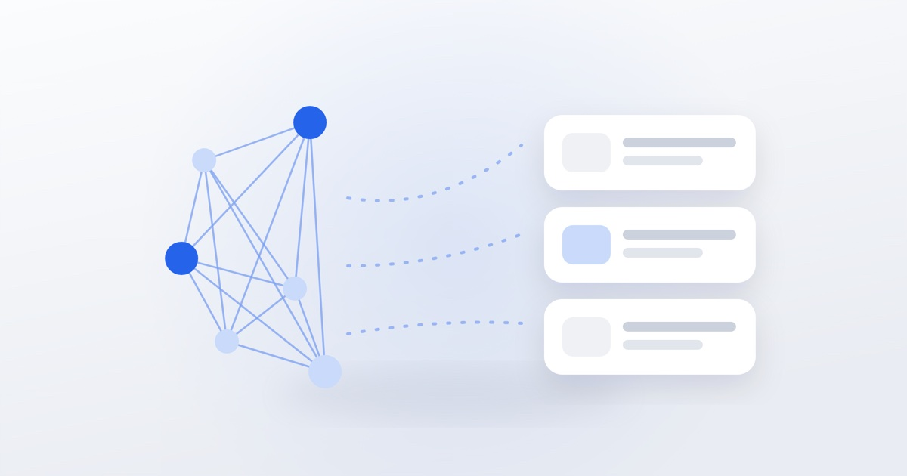

Нейросети в SMM: где они реально помогают

Нейросети перестали быть игрушкой и стали рабочим инструментом в контенте. Но восторги вокруг них мешают увидеть границы: часть задач ИИ решает отлично, часть — портит. Разберём по задачам.
Где нейросети экономят больше всего
Предметные и имиджевые фото
Съёмка фона, антуража, атмосферных кадров под конкретный стиль занимает день и стоит как фотосессия. Генерация даёт десятки вариантов за час. Особенно хорошо работает для ниш, где не нужны реальные лица: товары, интерьеры, абстрактные обложки.
Оживление статичных фото
Из обычного снимка получается короткое видео с движением. Даёт формат для сторис и роликов там, где видеосъёмки не было.
Черновики и структура текста
ИИ плохо пишет финальный текст, но хорошо собирает структуру: план статьи, варианты заголовков, список возражений клиента. Дальше человек переписывает под голос бренда.
Расшифровки и нарезка
Из длинного видео или эфира автоматически получаются текст, тезисы и куски под короткие ролики. Экономия часов ручной работы.
Идеи
Когда нужно 30 тем на месяц, а голова пустая, ИИ даёт список, из которого половина мусор, а десяток — рабочие направления.
Где ИИ подводит
- Лица реальных людей. Генерация чужих лиц вместо команды считывается и бьёт по доверию.
- Факты и цифры. Модели уверенно выдумывают. Всё, что похоже на факт, нужно проверять.
- Голос бренда. Текст без правки узнаётся по гладкости и одинаковым оборотам.
- Экспертный контент. ИИ пересказывает общее место, а ценность даёт именно ваш опыт.
- Кейсы. Здесь нужны реальные цифры проекта — их неоткуда взять.
Как встроить в работу
Рабочая схема — ИИ на черновик, человек на смысл:
- Человек формулирует задачу и даёт контекст: ниша, аудитория, тон.
- ИИ выдаёт варианты — структуру, картинки, нарезку.
- Человек отбирает, добавляет конкретику из практики и правит.
Такой порядок ускоряет работу в два-три раза, не превращая контент в безликий.
О чём стоит помнить
Не загружайте в публичные сервисы персональные данные клиентов и коммерческую информацию. Проверяйте условия использования сгенерированных материалов в коммерческих целях — они у сервисов различаются. И помните, что аудитория всё лучше распознаёт сгенерированные изображения: там, где важно доверие, лучше живая съёмка.
Мы делаем нейрофотосессии, видео по сценариям и оживление фото — как отдельную услугу или как часть ведения. Напишите, если нужен контент без съёмок.